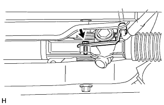
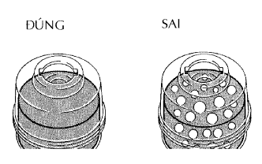

THANH NỐI DẪN ĐỘNG LÁI > LẮP |
| 1. LẮP CỤM THANH NỐI DẪN ĐỘNG LÁI |
 |
Lắp thanh nối dẫn động lái bằng 2 bulông và 2 đai ốc.
| 2. LẮP THANH ỔN ĐỊNH PHÍA TRƯỚC |
Lắp thanh ổn đinh phía trước vào thân xe.
| 3. ỔN ĐỊNH HỆ THỐNG TREO |
| 4. LẮP ỐNG HỒI ĐẦU RA HỘP CƠ CẤU LÁI |
Dùng SST, lắp ống hồi dầu ra.
 |
Lắp ống bằng kẹp.
| 5. LẮP CỤM ỐNG CẤP ÁP |
|  |
Lắp ống cấp áp vào thanh dẫn động lái bằng bu lông.
 |
Dùng SST, xiết đai ốc và lắp ống cấp áp.
| 6. XIẾT CHẶT HOÀN TOÀN CỤM TRỤC LÁI TRUNG GIAN NO.2 |
| 7. LẮP ĐẦU THANH NỐI BÊN TRÁI |
Lắp đầu thanh nối vào cam lái bằng đai ốc.
Lắp một chốt chẻ mới.
| 8. LẮP ĐẦU THANH NỐI BÊN PHẢI |
| 9. LẮP THANH GIẰNG DẦM DỌC TRƯỚC ĐẾN DẦM NGANG HỆ TREO TRƯỚC |
Lắp thanh giằng dầm ngang bằng 8 bulông.
| 10. LẮP BÁNH XE TRƯỚC |
| 11. ĐẶT CÁC BÁNH TRƯỚC HƯỚNG THẲNG VỀ PHÍA TRƯỚC |
| 12. LẮP CỤM CÔNG TẮC GẠT NƯỚC KÍNH CHẮN GIÓ |
 |
Gắn khóa cài để lắp công tắc gạt nước.
Nối các giắc nối.
| 13. LẮP CỤM CÔNG TẮC CHẾ ĐỘ ĐÈN PHA |
 |
Lắp công tắc chế độ đèn pha bằng vấu như trong hình Vẽ.
 |
Lắp công tắc sáng tối đèn pha bằng kẹp.
 |
Lắp giắc nối.
| 14. LẮP CÁP XOẮN |
| 15. LẮP NẮP CHE PHÍA TRÊN TRỤC LÁI |
| 16. LẮP NẮP CHE PHÍA DƯỚI TRỤC LÁI |
 |
Lắp nắp che phía dưới bằng 3 vít.
| 17. LẮP CỤM VÔ LĂNG |
 |
Gióng thẳng các dấu ghi nhớ trên vô lăng và trục lái chính.
Lắp đai ốc bắt vô lăng.
| 18. KIỂM TRA ĐIỂM GIỮA CỦA VÔ LĂNG |
| 19. LẮP CỤM MẶT VÔ LĂNG |
 |
Đỡ mặt vôlăng bằng một tay như trong hình vẽ.
Nối giắc túi khí.
Nối giắc nối còi.
Lắp mặt vôlăng sau khi xác nhận rằng rãnh trên chu vi của vít mắc vào vỏ vít.
Dùng chìa hoa khế T30, lắp 2 vít.
| 20. LẮP CÁP VÀO CỰC ÂM ẮC QUY |
| 21. KIỂM TRA ĐÈN CẢNH BÁO SRS |
Kiểm tra đèn báo SRS (Xem trang Kích chuột vào đây).
| 22. ĐỔ DẦU TRỢ LỰC LÁI VÀO |
| 23. HÃY XẢ KHÍ RA KHỎI HỆ THỐNG TRỢ LỰC LÁI |
Kiểm tra mức dầu.
Kích phía trước của xe lên và đỡ xe bằng các giá đỡ.
Quay vô lăng.
Với động cơ tắt máy, quay chậm vô lăng từ vị trí khoá sang vị trí khoá vài lần.
Hạ xe xuống.
Khởi động động cơ. Để động cơ chạy ở tốc độ không tải trong vài phút.
Quay vô lăng.
Với động cơ chạy không tải, quay vô lăng sang trái hoặc sang phải đến vị trí khoá hoàn toàn và giữ tại đó khoảng 2 đến 3 giây. Sau đó quay vô lăng đến vị trí khoá hoà toàn phía đối diện và giữ tại đó từ 2 đến 3 giây.
Lặp lại bước trên một vài lần.
Tắt động cơ.
|  |
Kiểm tra hiện tượng nổi bọt và đóng cặn, Nếu hệ thống đã được xả khí hai lần do có hiện tượng nổi bọt và đóng cặn, thì kiểm tra rò rỉ dầu trong hệ thống.
Kiểm tra mức dầu.
| 24. KIỂM TRA RÒ RỈ DẦU TRỢ LỰC LÁI |
| 25. KIỂM TRA VÀ ĐIỀU CHỈNH GÓC ĐẶT BÁNH TRƯỚC |
Kiểm tra và điều chỉnh góc đặt bánh trước (Xem trang Kích chuột vào đây).